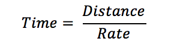

Problem made by Lockheed Martin, is CodeQuest 2017 Problem 8
This problem has a difficulty of 35
How long does it take to get from Earth to Mars? The answer is “it depends”. On what, you ask? Well, to keep things simple, we’ll consider the simplest distance formula:
Which can be re-written as:

In other words, the time it takes to get somewhere depends on how far we need to go and how fast we travel getting there. So how far away is Mars anyway? And how fast can we travel?
Mars is the fourth planet from the sun, and the second closest to Earth (Venus is the closest). But the distance between the two planets is constantly changing as they travel around the sun. In theory, the closest that Earth and Mars would approach each other would be when Mars is at its closest point to the sun (perihelion) and Earth is at its farthest (aphelion). This would put the planets only 33.9 million miles apart. However, this has never happened in recorded history. The closest approach of the two planets occurred in 2003, when they were only 34.8 million miles apart. The two planets are farthest apart when they are both at their farthest from the sun, on opposite sides of the star. At this point, they can be 250 million miles apart.
The fastest spacecraft launched from Earth was NASA's New Horizons mission, which is en route to Pluto. In January 2006, the probe left Earth at 36,000 miles per hour.
The first line of the file Prob08.in.txt will contain a positive integer T denoting the number of test cases that follow. Each test case will have the following input:
• A single line containing two numbers separated by a space. The numbers will be as follows:
The first number will be the distance between Mars and Earth, measured in millions of miles. The number could be an integer or a decimal.
The second number will be the speed of the ship, measured in miles per hour. The number could be an integer or a decimal.
3
34.8 36000
250 36000.1
150 23500
Your program should print out how long it will take the ship to reach Mars in the following format:
Time to Mars:
Time to Mars: 40 days, 6 hours, 40 minutes, 0 seconds
Time to Mars: 289 days, 8 hours, 25 minutes, 31 seconds
Time to Mars: 265 days, 22 hours, 58 minutes, 43 seconds